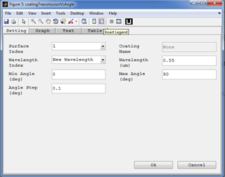
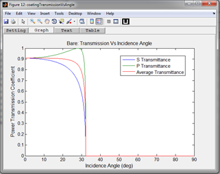

Coating Properties vs Incidence Angle

Purpose:
Computes and plots the S, P, and average polarization intensity coefficients for reflection for the specified surface with its coating as a function of incident angle.
Computes and plots the S, P, and average polarization intensity coefficients for transmission for the specified surface with its coating as a function of incident angle.
Computes and plots the R (reflected) and T (transmitted) diattenuation for the specified surface as a function of incident angle.
Computes and plots the retardance for the specified surface as a function of incident angle.
Setting:
Settings |
Description |
Remarks |
Surface Index |
The surface index to take and analyze the coating. |
|
Coating Name: |
Text box to enter a coating name to be analyzed. |
If the New Coating is selected for Surface Index then the user is allowed to enter the coating name. |
Minimum Angle: |
The minimum angle of incidence to plot in degree. This defines the left edge of the plot. |
|
Maximum Angle: |
The maximum angle of incidence to plot in degree. This defines the right edge of the plot. |
|
Angle Step: |
The angle step in degrees for plotting the graphs. |
|
Wavelength Index: |
Index of wavelength to be used from those inserted in system configuration window. |
|
Wavelength: |
Text box to enter a wavelength not defined in the system configuration window. |
Created with the Personal Edition of HelpNDoc: Free EPub and documentation generator